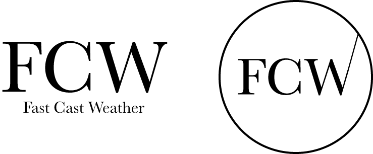

Site Name
My chosen site name for this project is Fast Cast Weather. According to domains.google the domain name fastcastweather.com is available for purchase.
Site Purpose
The purpose of the site Fast Cast Weather is to provide the current weather forecast to the intended audience in a quick, easy way. It will report the weather for Preston, Soda Springs, and Fish Haven, Idaho.
This site is intended to help the community, as well as those traveling here, be prepared for the day. We want people to be able to know the weather conditions, and plan accordingly for their dress, transportation, and recreational goals.
The site will also have a storm center page, which to my understadning will alert the viewers on possible incoming storms in the area, and if there are any storms happeining in real time. There will also be a gallery for photos.
Logo
A logo for the Fast Cast Weather company is currently being made. Below are 2 of the most viable options that are currently being worked. Advancments on the logo design will be posted below.
